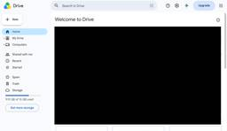

APC 技術ブログ
https://techblog.ap-com.co.jp/
株式会社エーピーコミュニケーションズの技術ブログです。
フィード

「AGNTCon + MCPCon Japan 2026」に参加してきました
APC 技術ブログ
はじめに みなさんこんにちは。エーピーコミュニケーションズACS事業部の亀崎です。 2026年9月10日～11日に、Agentic AI Foundationが主催する「AGNTCon + MCPCon」が渋谷で開催されました。 私もこのイベントに現地参加させていただきました。今回はその内容を簡単にご紹介させていただきます。 Agentic AI Foundation もしかするとご存じない方もいらっしゃるかもしれませんのでAgentic AI Foundationについて ご紹介します。 Agentic AI Foundation（略称AAIF）は、オープンソースエコシステムを支える Lin…
14時間前

【文系・未経験】IT新卒1年目が体感した、資格取得のメリット
APC 技術ブログ
「資格取得って意味あるの？」という疑問を持ったことはありますか。今回のブログでは「文系出身、IT未経験、新卒一年目」という特定の状況で私が感じ取った資格取得の恩恵をリアルなエピソードと共に紹介します。
2日前
APアカデミー「生成AIアプリ開発で学ぶAzure入門研修」受講レポート
APC 技術ブログ
はじめに こんにちは、クラウド事業部の伊藤です！ 弊社には「APアカデミー」という技術系やビジネス系の社内研修が用意されています。 APアカデミー キャリアアップガイド 今日、入社後初めてのAPアカデミー「生成AIアプリ開発で学ぶAzure入門研修」を受講しました。 弊社で各社クラウド等の様々な環境で生成AIを扱うプロジェクトが増えていることもあり、経験が浅いAzureへの抵抗感や苦手意識を少しでも減らすことが目的でした。 この記事では、受講したAPアカデミーの概要や、個人的な感想をまとめます。 受講したAPアカデミーの内容 主な内容は以下の通り、前半は座学、後半はハンズオン形式でした。 RA…
2日前

Azure GPU VMで小型LLM推論を実測して、CPUと比較してみた
APC 技術ブログ
GPU CPU比較 はじめに こんにちは、APCのSAT室PE推進チームに所属している簗田です。 AzureでGPU推論環境を評価するとき、VMが作れただけでは実運用の判断はできません。 実際には、以下まで確認して初めて「使える環境」と言えます。 GPUドライバーが正しく認識されるか 推論サーバが安定して起動するか 負荷をかけたときにどの程度スケールするか 今回は、Azure GPU VM上で小型LLMを動かし、CPU実行との差を実測値で比較しました。 はじめに 今回のゴール 実験環境 検証時に決めたルール 実行フロー 単発ベンチマーク結果 同時実行ベンチマーク結果 CPU/GPU比較の要点 …
2日前

【Zscaler】テナント制限はどこまで細かくできるのか？~Google Drive で検証
APC 技術ブログ
目次 はじめに 事前確認（ポリシー設定前） 設定手順 1. Google Drive がSSLインスペクション対象になっていることを確認 2. Tenant Profile を作成 3. Cloud App Control Policy を作成 4. URL Categories を作成 5. URL Filtering Rule を作成 検証結果（設定反映後の挙動） アクセスパターンのまとめ おわりに はじめに こんにちは！iTOC事業部 0-WAN 阿部です。 サイバー攻撃への脅威が増すなか、DLP（データ漏洩防止）対策に頭を悩ませているIT担当者様も多いのではないでしょうか。特に、社用・…
3日前

【OCI】Observability Professional合格記
APC 技術ブログ
目次 目次 はじめに 資格の概要 受験の目的 受験前のスペック 試験の詳細 概要 範囲 合格へのルート 学習教材 学習サイクル 工夫した点 試験のポイント 受験してみた感想 さいごに おわりに はじめに こんにちは、エーピーコミュニケーションズの松尾です。 Oracle Cloud Infrastracture（OCI）の認定試験であるObservability Professional を受験して合格したので学習内容を紹介したいと思います。受験を検討中の方の参考になれば幸いです。 資格の概要 OCIの監視機能について問われる試験で、アラームや通知、可観測性などが範囲となります。 詳細は公式情…
4日前

【Backstage】NODE_OPTIONS=--no-node-snapshot 指定が不要に
APC 技術ブログ
はじめに みなさんこんにちは。エーピーコミュニケーションズ ACS事業部の亀崎です。 今回はちょっと技術的で細かいお話を。 2024年5月に「Node20以降でBackstageを実行する場合の注意事項」をご紹介しました。 techblog.ap-com.co.jp こちらの制限が2026年8月の Backstage v1.54から不要 になりました。 「注意事項」としてブログ記事にしていたこともありますので、その記事を上書きするべく 変更の内容についてご紹介したいと思います。 「NODE_OPTIONS=--no-node-snapshot」指定の経緯 なぜ 「NODE_OPTIONS=--…
7日前

【GitLab Duo Agent Platform】アラート原因を自律的に分析・特定・解決するカスタムフローを実装してみた
APC 技術ブログ
こんにちは、クラウド事業部 CI/CD導入支援サービスチームの西野です。 今回はGitLab Duo Agent Platform（以下、DAP）の機能の一つであるカスタムフローの具体的な活用例として、アラート原因を自律的に分析・特定・解決するカスタムフローの実装方法を紹介します。 DAPの概要については、以下の記事で紹介しておりますので、併せてご覧ください。 techblog.ap-com.co.jp また、本記事に関連するウェビナーのご案内もごさいます。詳しくは記事末尾のご案内をご参照ください。 目次 目次 Flows（フロー）について アラートを自律的に解決するカスタムフローの実装 本検…
9日前
【さくらのクラウド】K3s上でOpenTelemetry eBPF Instrumentation(OBI)を検証しSDK自動計装との棲み分けを確認した
APC 技術ブログ
さくらのクラウドの「モニタリングスイート」とOTel eBPF Instrumentation（OBI）を組み合わせ、K3s環境におけるeBPFベースの自動計装を検証。SDK計装済みサービスとの棲み分けや自動スキップの挙動を実機で確認しました。
11日前
API Management ハンズオン三部作で辿る、MCPとAI Agentのセキュアな統合
APC 技術ブログ
目次 目次 はじめに 1. 三部作の全体像 2. タロットの大アルカナで読み解く三つの段階 3. 技術的な見どころ 結びに ハンズオンページ（ここから始められます） ACS 事業部のご紹介 はじめに こんにちは。ACS事業部の折田です。 組織の中で MCP（Model Context Protocol）サーバーや AI エージェントが増えてくると、新しい課題が見えてきます。 多数のMCP サーバー/エージェントをどう安全に管理するかという問題が出てきます。 さらに、MCP やエージェント、Skill が部署やリポジトリをまたいで増えていく中で、それらをどう一元的に把握し、開発者に届けるか——こ…
11日前
認知負荷を下げるだけでいいのか。プラットフォームに必要な「メカニカルシンパシー」とは何か
APC 技術ブログ
はじめに 想定読者 書籍から得た視点 「隠す」と「理解させる」は、本当に矛盾するのか プラットフォーム設計での線引き AI時代におけるメカニカルシンパシーの重み まとめ はじめに こんにちは、ACS事業部 の小原です。 Platform Engineering や Internal Developer Platform を語るとき、必ずと言っていいほど出てくるキーワードが「認知負荷の削減」です。標準化されたテンプレート、事前設定済みの自動アクション、一箇所に集約されたドキュメントなど、開発者が余計なことを考えずに価値を生み出せるよう、プラットフォームチームは複雑さを隠す努力を積み重ねています。…
11日前
【Backstage】 New Frontend System導入ガイド （Part4「Home Pluginの導入と/(root)パスの変更」）
APC 技術ブログ
はじめに 皆さんこんにちは。エーピーコミュニケーションズ ACS事業部 亀崎です。 Backstage New Frontend System 導入ガイド 第1回 〜 第3回 いかがでしょうか。 すこしずつどのように設定するのかといったことも見えてきたのではないかと思います。 【Backstage】 New Frontend System導入ガイド （Part1「SSOの設定」） - APC 技術ブログ 【Backstage】 New Frontend System導入ガイド （Part2「サイドメニューの設定」） - APC 技術ブログ 【Backstage】 New Frontend Sy…
12日前
【2026年8月17日適用】Zscaler FY27新SKUを解説
APC 技術ブログ
こんにちは、エーピーコミュニケーションズ 0-WANの山根です。 Zscalerのライセンスが新体系に変わりますので本記事にて解説させていただきます！！ 4つのPlatformライセンスの違い 本記事は、2026年8月時点で確認できるZscaler FY27のSKU情報をもとに、公開可能な範囲で概要を整理したものです。FY27 SKUは2026年8月17日から適用されます。実際の提供機能、利用条件、最低契約数、追加SKU、価格などは、契約内容や地域によって異なる場合があります。正式な見積・設計時には、最新のZscaler公式資料および販売パートナーへご確認ください。 Zscalerでは、202…
12日前
今からでも間に合う 開発者ポータルBackstage入門
APC 技術ブログ
はじめに 皆さんこんにちは。エーピーコミュニケーションズ ACS事業部の亀崎です。 2026年8月24日、弊社のオンラインIT勉強会「8a1（ハーイ）」にて、登壇させていただきました。 8a1-apc.connpass.com スライドはこちらです www.docswell.com セッション動画も公開されています。 youtu.be 今日はその内容をさらに簡単にしてご紹介したいと思います。 Backstage 入門 Backstageとは Backstageというのは 音楽配信大手のSpotify社が自社サービスの開発用として作られたもので、2020年にOSSとして公開、CNCFに寄贈された…
15日前
グラフDBの移行に必要な考慮事項
APC 技術ブログ
こんにちは。ACS事業部の簗田です。 最近、AIエージェントやナレッジグラフのバックエンドとして、Graph Database（グラフDB）を利用する構成を目にする機会が増えてきました。 そんな中で、 「AWSのAmazon Neptuneで動いているグラフDB基盤をAzureへ移行するとしたら、何を考えればいいんだろう？」 という疑問が出てきました。 最初は、 Amazon Neptune → Azure Cosmos DB と置き換えればいいのでは？ ……と思っていたのですが、調べてみると、そんなに単純な話ではありませんでした（笑）。 グラフDBでは、 どのデータモデルを使っているのか ど…
15日前
社内テンプレートに沿ったスライド生成AIツール ～「それっぽい」を卒業するための挑戦～
APC 技術ブログ
こんにちは。ACS事業部 SAT室の竹江です。 生成AIにスライド作成させる際、テンプレートを渡しても、作成されたスライドは色や雰囲気が似ているだけで、テンプレートのデザインに完全には沿ってくれないという悩みはありませんか。 私たちも不完全だと思いながらそのまま使うか、結局は手作業で修正する必要がありました。 そこで、2026年8月現在、テンプレートを踏襲したスライドの自動生成方法を検討し開発を始めました。 本記事では、Step1で実現した「テンプレートに沿ったスライド生成」と、Step2で取り組んでいる「資料からのスライドコンテンツ作成」について、開発中に分かった課題とともに紹介します。 生…
16日前
個人アプリを企業品質で測ってみた
APC 技術ブログ
こんにちは。ACS事業部の越川です。 前回書いたことを、自分で疑いました 測った項目 テストは書けていました Go を測ったら 2.5% でした 2.5% は「テストされていない」ではありませんでした カバレッジは実態を映していませんでした 回収する方法はありました テストが届かない場所には理由がありました 配布物は他人の環境で動きませんでした 良かった点もありました CI はありませんでした 個人と企業で何が変わるのか AIが埋めた領域と、埋めなかった領域 ここから先が組織の仕事です まとめ 参考 ACS 事業部のご紹介 前回書いたことを、自分で疑いました 前回「AIを使えば欲しいツールはす…
17日前
AZ-104合格体験記
APC 技術ブログ
はじめに こんにちは、クラウド事業部の矢田です。 実務でAzureを利用する可能性があるため、Azureの資格試験を受験しました。 読者の皆さんによって前提知識や経験は異なるかと思いますが、私の体験が少しでも参考になれば幸いです。 前提知識 これまで実務でOCIやAWSを利用した経験はありましたが、Azureに関しては少し用語を聞いたことがある程度で、ほとんど未経験の状態でした。 勉強方法 約10日間試験対策をしました。 公式YouTubeチャンネル 公式チャンネルの動画がとても有益でした。わからない用語なども丁寧に解説されており、非常に参考になりました。私の場合他のパブリッククラウドにはない…
17日前
AIを使えば欲しいツールはすぐできる
APC 技術ブログ
こんにちは。ACS事業部の越川です。 仮説を立てました 結果 macca（ローカル音楽プレイヤー） 作った理由 設計原則を先に決めました 実装で判断したこと 載せなかった機能 totta（本をLLMに読ませるアプリ） 作った理由 LLMに渡す前提から逆算しました メモリの設計 データを残さない設計 失敗した話 検証結果 速さの正体 Copilot でも同じか試しました 作って終わりにはなりませんでした AIで作ったものと、AIが作ったもの まとめ 参考 ACS 事業部のご紹介 仮説を立てました 「AIを使えば欲しいツールはすぐできる」 この言い方は珍しくありません。ただ自分で確かめていないこと…
18日前
【Zscaler】設定したのにブロックできない！ZscalerにおけるQUIC（UDP/443）通信の落とし穴と回避方法
APC 技術ブログ
こんにちは！iTOC事業部0-WANの平松です。 今回は、ZIA（Zscaler Internet Access）環境において、Web通信にQUIC（UDP/443）が使用されたことにより、SSLインスペクションやURLフィルタリングがうまく動作しなかった事象について、その原因と解決策をご紹介します。 1. QUICとは QUICとは、従来の「TCP/443」に代わり、「UDP/443」を利用してWebブラウザ通信などを行うためにGoogleが開発した通信プロトコルです。 大きな特徴として、UDPを採用することでTCP特有の3ウェイハンドシェイクを省略でき、通信の確立が非常に高速になります。さ…
18日前
安全なはずのログが罠に？GhostJacking解説
APC 技術ブログ
こんにちは、エーピーコミュニケーションズ ACS事業部の福井です。 自律型AIエージェント（Agentic AI）の現場導入が急速に進み、コーディング支援だけでなく「インフラ運用の自動化」「障害調査」「ログ分析・トリアージ」といった領域でもAIが活躍する場面が増えてきました。 そんな中、セキュリティ界隈で非常に興味深く、かつ現場のエンジニア目線で背筋が凍るような最新の攻撃手法が発表されました。 DEF CON 34にてTenet Securityの研究チームが発表した「GhostJacking」（ゴーストジャッキング）です。 （参考：SecurityWeekの報道 / Bright Nexus…
18日前
【Zscaler】Zero Trust Branch(ZT400)のアクティベーション手順｜Site作成からStandalone確認まで
APC 技術ブログ
Zero Trust Branch(ZT400)をExperience Centerへ登録する手順を解説します。Site TemplateとSiteの準備、WAN設定、アクティベーションURLによる有効化、Standaloneの確認までを画面付きで紹介します。
23日前
【Zscaler】URLフィルタリングにおけるワイルドカードと完全一致の優先順位について
APC 技術ブログ
今回はURLフィルタリングにおけるワイルドカードと完全一致の優先順位についてご紹介します。
24日前
【初心者向け】Datadogとは？Bits AI入門と2社の利用事例
APC 技術ブログ
本記事は、Datadogのハイブリッドセミナーで学んだ内容のまとめと、それに関連して自身で調べた機能について記載したレポートです。 はじめに Datadogとは？最小限のシステムを繋げて解説 メトリクス ログ トレース 初心者の勉強のコツ Datadogが注力するBits AI Bits Chatの設定と使い方 ①History機能 ②SettingのSkills ③Notebook機能 セミナーで学んだ2社のDatadog利用事例 事例① 登壇者1人目：少人数でアプリ開発されていて、Datadogを工数削減に使用しているエンジニアの方 事例② 登壇者2人目：業務改善にDatadogを用いてい…
25日前
【Zscaler】ChatGPTへの情報漏えいを防ぐ―ZIAのPrompt CaptureとDLPを検証してみた
APC 技術ブログ
Zscaler Internet Access（ZIA）のPrompt CaptureとDLPを使い、ChatGPTへ入力したプロンプトの記録と、「機密区分：社外秘」を含むテキストプロンプト・CSVファイルの送信ブロックを検証します。
1ヶ月前
【初心者向け】結局「オブザーバビリティ」って監視と何が違うの？ざっくり解説
APC 技術ブログ
※本記事は、読者の理解を補助することを目的に、一部で生成AIを活用して文章構成および解説を作成したものです。（エーピーコミュニケーションズ クラウド事業部） こんにちは、クラウド事業部の本間です。 突然ですが、「オブザーバビリティ」という言葉を聞いたことはありますか？ なんとなく使ってるけど、監視との違いがよく分からない… という方もいらっしゃるのではないでしょうか。 何を隠そう、今回の記事タイトルは以前私が抱いていた疑問です。 しかしシステム運用において今日では当たり前に用いられるこの言葉。 本記事では、オブザーバビリティの概念を ゼロから理解していきたいと思います。 ざっくり解説 ずばり、…
1ヶ月前
【2026年版】OWASP LLM Top 10 v3.0から読み解く、AIセキュリティにおける「引き算」の重要性
APC 技術ブログ
こんにちは、エーピーコミュニケーションズ ACS事業部の福井です。 生成AIや自律型AIエージェント（Agentic AI）の業務実装が進む中、セキュリティの考え方も大きな転換期を迎えていると感じています。 先日、OWASP（Open Worldwide Application Security Project）から大規模言語モデル向けセキュリティリスクの最新版である「OWASP Top 10 for LLM Applications v3.0 (2026年版)」が公開されました。 また、同時期に不要な機能や攻撃面そのものを削除・削減することを重視した新しい評価フレームワーク「OWASP Su…
1ヶ月前
【Zscaler】ZIAの生成AI制御とは？可視化・アクセス制御・DLPを解説
APC 技術ブログ
Zscaler Internet Access（ZIA）による生成AI制御の全体像を解説。URL FilteringとCloud App Controlによる利用制御、Prompt Captureによるプロンプト記録、DLPによる機密情報の検査まで、シャドーAI対策・情報漏えい対策の設計ポイントを紹介します。
1ヶ月前
GitHub Advanced Security × CodeQL × 引き算的考え
APC 技術ブログ
こんにちは、エーピーコミュニケーションズ ACS事業部の福井です。 GitHub Advanced Security（GHAS）の中核をなす静的解析ツール「CodeQL」。 導入時、「せっかくなら検知範囲が一番広い設定にしよう」と考えて、標準の default スイートや少し拡張した security-extended から、security-and-quality（通称：全部盛りパック）へ切り替えることを検討する方は多いのではないでしょうか。 私も同じことを考えた一人です。 ただ、切り替えた先に何が起きるのかを自分の目で確かめないまま導入を勧めるのは、一次情報とは言えないと感じました。 そこ…
1ヶ月前
【Zscaler】Zero Trust Branchとは？拠点ネットワークをゼロトラスト化する仕組み
APC 技術ブログ
Zscaler Zero Trust Branchの全体像を、従来の拠点ネットワークとの違い、ZIA/ZPAへの通信転送、WAN回線制御、Device Segmentation、Network of Oneとともに分かりやすく解説します。
1ヶ月前